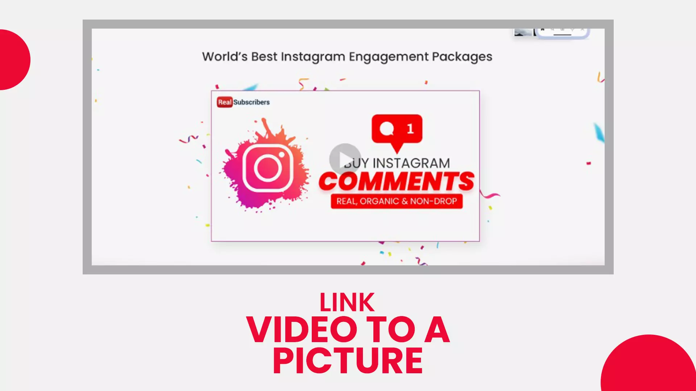

Today with easy and cheap access to a domain name and hosting, you can launch a website of your own with minimum effort. Anyone with a zeal for writing and access to a computer with a stable internet connection can start blogging. The online world witnessed the rise and fall of bloggers every day. Failure is mainly because of a writer's inability to go that extra mile to make their copy better. On the other hand, the ones who find success often look at new avenues that can bring additional value to their readers - one such practice includes embedding a YouTube video into their text content. Studies also support the inclusion of videos inside your blog post - not only does it extend the average time reader spends on your post, but it also boosts the overall rate of engagement. Moreover, the Google algorithm gives preference to blogs that have embedded videos. In this article, we'll walk you through the different steps that can help improve your blog post with YT videos.
Select the Right Video
Selection of the right content takes the first priority. It is crucial that the video you choose is relevant to your blog article. For example: suppose you're writing an article on how to run a contest or giveaway on YouTube. The footage that you embed can highlight everything that happened behind the scenes leading to the final event. As you can see, there are similarities between your article and video - making your video blog, even more engaging for the readers.
Embed Similar YouTube Videos into Blogs
The simplest way to integrate YouTube videos with your content marketing is by embedding your motion graphics directly into the blog post. Video not only keeps viewers on your blog post for a longer duration, but readers will also continue reading your article as soon as they finish watching the footage. A seasoned blogger knows the importance of inbound links – they are crucial to scoring a higher ranking for articles in Google search results. Blogs that have videos get more backlinks than the ones that don't - resulting in more traffic and more dwell time, which are vital for securing the top spot in results. Let's say you have a video titled 'How to do effective social media marketing in 5 steps and you want to insert this into your blog post. Here is how you can do it:
- When you find the YouTube video of your choice press the 'Share icon' below to get the 'YouTube video Embed Code'.
- Tab on 'Embed' and 'copy' the code that follows.
- Now 'Paste' the code in the section of your post editors, where you want the video to appear. WordPress users will have to select the HTML block and place the code inside it.
Also read: Drive traffic from Youtube to your website
Create New Videos for Your Post
On Google 'How to' is a popular term used by people along with their search query. For example: 'How to learn digital marketing' or 'How to create a YT video'. The intention behind a user's search is clear – they came to your page to learn; hence they require an in-depth explanation for their query. You could have the most well-written 'How to' article for your niche, but it will still pale in comparison to a video, where you guide your viewers through each step of the process – helping your audience to quickly understand the underlying topic. Motion graphics triumph over written words or static images any day. To add value to your article you can produce a tutorial video that complements the contents of your blog – your article is still the centre of attention, so be sure to not embed footage that can potentially overshadow your written work. When you upload your video to your channel, make sure to include the link to your write-up in the description box. This is a good tactic to divert your video audience to your blog post. You can also buy YouTube subscribers, as they are real people who will watch more of your content. Eventually navigating to your blog.
Use Existing Videos
When you write blogs that cover topics related to entertainment or some generic problems. It is not always possible to create separate videos by yourself. For example, when you write articles for top movie releases, you can use trailers or teasers that have been released by the concerned studio for the purpose of generating user awareness. Since you are making their job much easier you won't be subjected to any restrictions from their end. When you write articles about the government or any political party, you can embed footage of rallies or speeches made by the concerned leaders or rival parties. You can also take content from other news outlets like YouTube. If possible, enforce your blog by including public opinion about a particular topic - the words of a human are trusted by another human being more than anything else. Also read: Create a Youtube video without showing your face
Link Video to a Picture

Embedding videos directly into your blog post is the easiest but is only viable if the duration of your footage is short. On the other hand, for longer videos, the size may be too big for a blog or maybe your blog is not the place you want them to watch your content. In this scenario, you can link your video to a picture or text.
- Start by taking a screenshot of your video.
- Click the add media button to insert the image to your blog post.
- Add title, caption, alt text and description for your image as they help improve your SEO.
- Now tap on the image you inserted and press the hyperlink button from the toolbar - paste your YT video link here.
- Hover your mouse over yeah image and Tab on the edit button.
- In the pop-up window, select advanced option and check the section that reads 'Open Link in A New Tab'. Your audience can now play the video in a separate tab without having to go back to your article.
Conclusion
YouTube marketing and content marketing complement each other. Businesses of all sizes benefit when they integrate YouTube video as part of their content strategy. Video is a medium that receives one of the highest online engagementcompared to other content types and brings along strong SEO perks that can elevate your brand. We hope you found our blog on how to improve blog posts with YT videos valuable. We have more such articles on your website. Do check them out. Is a video blog post of your content strategy? Feel free to share.